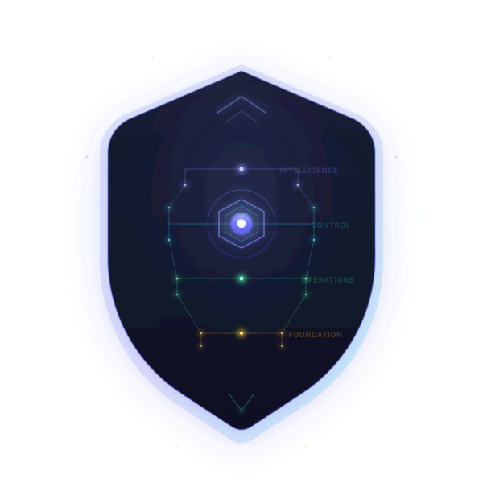

Turn operational complexity into controlled action.
Reliability, Operational Decision, Governance & Control Platform
AEGIS is an intelligent Reliability, Operational Decision, Governance & Control Platform for modern cloud and cloud-native environments. It brings together platform visibility, operational intelligence, decision-making, governance, controlled execution, verification, recovery and continuous learning within a single operational system.
The challenge is no longer collecting more data.
Modern operations teams already have cloud platforms, monitoring systems, observability tools, security platforms, automation, Infrastructure-as-Code, CI/CD and service management systems.
The challenge is determining:
AEGIS provides the operational control layer for answering those questions consistently.
From visibility to decision. From decision to governed action.
From every action to continuous improvement. AEGIS operates through one continuous operational loop.
KNOW
OBSERVE
DECIDE
CONTROL
EXECUTE
VERIFY
LEARN
AEGIS continuously understands the platform, observes operational signals, evaluates evidence, determines appropriate actions, applies governance and safety controls, executes authorised operations, verifies outcomes and learns from the results. This creates a controlled operational lifecycle rather than disconnected monitoring, automation and governance processes.
Foundation → Operations → Control → Intelligence
Together, they create the operational context required to understand, operate, govern and continuously improve modern technology platforms.
Know your platform.
Build a continuously updated understanding of your infrastructure, services, dependencies, ownership and changes.
- Multi-cloud & Kubernetes discovery
- Resource inventory & service catalogue
- Dependency & infrastructure graphs
- Configuration drift & structural diffing
- Terraform intent, managed state & runtime correlation
- Platform identity & ownership
- Continuous platform baselining
Know what exists, how it connects, what changed and what should be true.
Run your platform reliably.
Turn signals, changes and operational context into faster understanding, coordinated response and safer recovery.
- Unified signals & Situation Fusion
- Incident coordination & intelligent triage
- SLO & reliability management
- Service health & golden signals
- Change correlation & root-cause context
- Governed runbooks & remediation
- Recovery & rollback-aware operations
Understand what is happening, why it matters and what action should follow.
Govern every decision and action.
Apply policy, authority, risk and safety controls before operational actions execute.
- Pre-execution assurance
- Policy-as-code & reliability gates
- Authority & approval workflows
- Blast-radius & risk assessment
- Governed remediation & execution
- Autonomy safety controls
- Recovery & rollback requirements
- Post-execution verification
- Immutable evidence bundles
Ensure every critical action is authorised, constrained, executed safely, verified and evidenced.
Continuously improve your platform.
Learn from operational history, platform behaviour, decisions and execution outcomes.
- Operational Memory
- Cost & FinOps intelligence
- Predictive reliability signals
- Anomaly & emerging-risk detection
- PRE-100 platform maturity
- Architecture risk intelligence
- Recurring failure-pattern analysis
- Decision & remediation effectiveness
- Executive decision intelligence
Turn operational evidence into better decisions, lower risk and continuous improvement.
One operational truth, seen through purpose-built views.
From platform posture and live inventory to incidents, cost and intelligence — every surface works from the same governed operational model.
Is the platform healthy — reliability, security, governance, cost?
Maturity by domain, security posture, compliance benchmarks and the pillar cards that turn raw signals into an honest, severity-weighted view of operational posture.
Know what exists and how it connects.
Continuously discovered infrastructure across compute, networking, security, storage and more — organised around the Observe → Act → Verify operating loop.
What is happening, who is affected, how do we recover?
Unified incidents, problems, changes and deployments with severity, SLA state, routing authority and governed acknowledge-and-resolve — the operations console in one place.
Where can we reduce cost without creating risk?
Spend trends, anomaly detection, idle waste and efficiency scoring — connecting optimisation opportunities to workload importance and operational risk before any action.
Learn from every decision and outcome.
The Platform Brain — predictions, operational memory, recommendations and per-service architecture scoring — turning operational evidence into continuous improvement.
Representative product views. Account identifiers and customer data are anonymised.
Most systems detect. AEGIS acts, verifies and recovers.
Many operational systems identify conditions requiring attention. AEGIS extends the lifecycle beyond detection.
AEGIS brings operational understanding, governed decisions, controlled actions and outcome verification into a connected reliability workflow.
When appropriate, AEGIS can determine whether remediation is suitable, establish whether it is permitted, act within defined boundaries and verify the resulting state.
Automate progressively — without removing operational control.
Pre-Execution Assurance
AEGIS evaluates operational readiness, applicable governance requirements and execution safety before permitting automated actions. Organisations retain control over how actions are authorised, constrained, verified and escalated.
Governed Autonomy
AEGIS does not treat autonomy as simply automation on or automation off. Organisations can define:
- Which actions AEGIS may perform
- Which environments those actions are permitted in
- What evidence is required
- What authority is required
- Acceptable blast-radius boundaries
- When human approval is mandatory
- What verification must follow execution
- What recovery capability must exist
- When execution must stop or escalate
Verified Remediation
AEGIS does not treat a successful API response as proof that remediation succeeded. After execution, AEGIS can verify the resulting platform state against the intended outcome. This creates a closed operational loop:
Operational Memory
AEGIS builds institutional operational knowledge from signals, incidents, changes, decisions, evidence, approvals, actions, verification, recovery attempts, outcomes and recurring failure patterns.
Instead of each incident starting from zero, AEGIS can retain the history of what happened, what was attempted, what succeeded, what failed and under which conditions.
Situation Fusion
AEGIS connects operational signals and contextual information across infrastructure, applications and delivery systems, helping teams identify related conditions, understand potential impact and prioritise response.
One common operational model.
AEGIS can operate as an independent operational platform, directly discovering, analysing, governing and controlling cloud and infrastructure environments. It can also integrate with your existing operational tools, bringing telemetry, signals, infrastructure state, changes, workflows and execution capabilities into a common operational decision and control framework.
Cloud & Orchestration
Observability
ITSM · IaC · Delivery
Signals & Sources
Infrastructure & Architecture Intelligence
AEGIS provides a unified understanding of infrastructure configuration, intended architecture and operational reality, helping teams detect meaningful drift, identify inconsistencies and assess change-related risk.
Every governed operation produces an evidence chain.
This provides operational accountability for both human-assisted and autonomous operations.
AEGIS maintains traceable operational evidence connecting decisions, authorisations, actions and verified outcomes, supporting governance, accountability and operational reviews.
From reactive cloud operations to governed, evidence-driven operations.
Reduce Operational Risk
Evaluate policy, authority, dependencies, blast radius and recovery readiness before operational changes execute.
Resolve Incidents Faster
Correlate infrastructure, Kubernetes, application, security, deployment, drift and operational signals into actionable situations.
Automate with Control
Enable operational automation within explicit policies, authority and safety boundaries.
Prevent Unsafe Actions
Use pre-execution assurance to identify unauthorised, unsafe or high-risk operations before they affect production.
Unified Operational Context
Bring cloud APIs, Kubernetes, OpenTelemetry, observability platforms, ITSM, CI/CD, IaC and other sources together.
Understand Relationships
Connect resources, workloads, services, dependencies, configurations, changes and operational history.
Control Infrastructure Drift
Compare intended, managed, previous and current states to identify meaningful divergence.
Strengthen Security & Governance
Evaluate cloud configuration, identity, network exposure, policies, operational authority and compliance conditions.
Reduce Manual Effort
Automate repetitive investigation, evidence gathering, validation, remediation, verification and recovery workflows.
Make Automation Accountable
Preserve the evidence explaining why an action was permitted, what was executed and what outcome was achieved.
Improve Reliability
Combine SLOs, incidents, dependencies, changes, signals and operational history to support safer decisions.
Improve FinOps Decisions
Connect optimisation opportunities with workload importance, utilisation, policy and operational risk before execution.
Preserve Operational Knowledge
Build Operational Memory from incidents, decisions, actions, recovery attempts and outcomes.
Confidence in Autonomy
Progressively grant autonomy based on policy, evidence, authority, blast radius, verification and proven recovery capability.
A cross-platform operational decision, governance and control layer.
Cloud-native tools provide powerful capabilities within their respective platforms. AEGIS adds a layer across environments, operational domains, tools and teams.
| Capability | Typical Cloud-Native Tooling | AEGIS |
|---|---|---|
| Cloud scope | Primarily provider-specific | Cross-cloud & platform |
| Operational signals | Primarily native ecosystem | Multi-source unified context |
| Detection | Supported | Supported |
| Situation correlation | Varies by service | Cross-domain Situation Fusion |
| Decision layer | Service-specific | Unified operational decisions |
| Pre-execution assurance | Service/control-specific | Integrated assurance pipeline |
| Policy governance | Provider-specific | Cross-platform governance |
| Automation | Native workflows | Governed cross-domain execution |
| Autonomy boundaries | Tool-specific | Explicit authority & safety boundaries |
| Post-action verification | Workflow-dependent | Closed-loop verification |
| Operational memory | Distributed | Unified decision & outcome history |
| Evidence | Distributed | Decision-to-outcome evidence chain |
| Integration | Ecosystem-focused | Cloud + observability + ITSM + IaC |
One platform. Different decisions.
AEGIS gives different teams purpose-built perspectives on the same operational truth.
Platform Engineers
Is the platform healthy and operating as designed?
Maintain healthy shared platforms, Kubernetes environments, dependencies, capacity and platform services. Detect divergence early and safely automate repetitive operations without giving up engineering control.
DevOps Engineers
Can we deliver this change safely?
Connect CI/CD, deployments, infrastructure changes, runtime behaviour and failures. Understand whether a change contributed to an issue, enforce delivery guardrails and accelerate recovery.
Site Reliability Engineers
Can we maintain reliability and recover quickly?
Focus on service health, SLOs, error budgets, dependencies, failure patterns and recovery. Distinguish individual symptoms from wider operational situations, with post-action verification.
Cloud & Infrastructure Engineers
Is the infrastructure in the correct state?
Understand what resources exist, how they are configured, what depends on them and what changed. Detect configuration and Terraform divergence and execute operations through governed workflows.
Cloud Security Engineers
Is this risk controlled and safely remediated?
Move from detecting vulnerabilities and misconfigurations to safely correcting them. Evaluate policy, authority, exposure, blast radius and remediation safety before execution, then verify the fix.
Incident Management Teams
What is happening, who is affected and how do we recover?
Transform disconnected alerts, changes, errors and infrastructure events into coherent operational situations. Track impact, evidence, ownership, actions, recovery and escalation.
FinOps Teams
Where can we reduce cost without creating operational risk?
Evaluate optimisation opportunities alongside workload importance, utilisation, operational risk and policy. Govern optimisation actions and measure whether expected savings were actually realised.
Cloud Architects
Does runtime reality still match architectural intent?
Compare architectural and Infrastructure-as-Code intent with managed state and runtime reality. Identify topology, dependency, configuration, policy and architectural divergence.
Infrastructure & Platform Leaders
Are our operations controlled, scalable and becoming more autonomous safely?
Understand platform reliability, operational load, governance effectiveness, automation safety and maturity. Define where autonomous operation is appropriate and where human authority must remain.
Engineering & Programme Leaders
Are we operationally ready to proceed?
Evaluate readiness, unresolved risks, dependencies, reliability conditions, governance requirements and blockers before major releases — using operational evidence rather than manual status reports.
Executives & Technology Leadership
What is our technology risk and operational posture?
Gain a business-level perspective of technology reliability, operational risk, governance, resilience, cost and improvement trends without navigating infrastructure-level telemetry.
For technology leaders, AEGIS means:
Fewer operational blind spots. Faster decisions. Lower operational risk. Stronger governance. Safer automation. Improved reliability. Greater accountability.
For engineering teams, it means spending less time:
and more time improving the platforms and services they own.
A shift from fragmented and reactive operations toward reliable, governed, evidence-driven, controlled and progressively autonomous operations.
From operational visibility to governed action.
Know what is happening. Understand why it matters. Decide what should happen. Govern what is allowed. Act safely. Verify the outcome. Recover when necessary. Learn from every operation.
See AEGIS in action
Tell us a little about your platform and what you'd like to see. We'll be in touch to arrange a walkthrough.